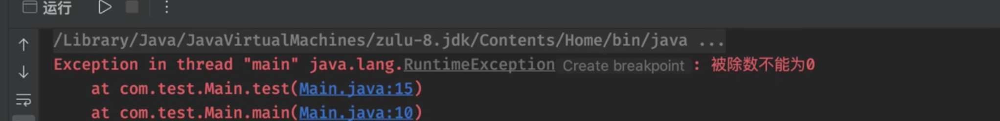

【5】 异常处理
异常介绍
在理想的情况下，我们的程序会按照我们的思路去运行，按理说是不会出现问题的，但是，代码实际编写后并不一定是完美的，可能会有我们没有考虑到的情况，如果这些情况能够正常得到一个错误的结果还好，但是如果直接导致程序运行出现问题了呢？
public static void main(String[] args) {
test(1, 0); //当b为0的时候，还能正常运行吗？
}
private static int test(int a, int b){
return a/b; //没有任何的判断而是直接做计算
}
Exception in thread "main" java.lang.ArithmeticException: / by zero
at com.test.Application.test(Application.java:9)
at com.test.Application.main(Application.java:5)
当程序运行出现我们没有考虑到的情况时，就有可能出现异常或是错误！
异常分类
我们在之前其实已经接触过一些异常了，比如数组越界异常，空指针异常，算术异常等，他们其实都是异常类型，我们的每一个异常也是一个类，他们都继承自Exception类！异常类型本质依然类的对象，但是异常类型支持在程序运行出现问题时抛出（也就是上面出现的红色报错）也可以提前声明，告知使用者需要处理可能会出现的异常！
运行时异常
异常的第一种类型是运行时异常，如上述的列子，在编译阶段无法感知代码是否会出现问题，只有在运行的时候才知道会不会出错（正常情况下是不会出错的），这样的异常称为运行时异常。所有的运行时异常都继承自RuntimeException。
public static void main(String[] args){
Object object = null;
object:toString(); //出现运行时候异常
}

或者是这种情况：
public static void main(String[] args){
Object object = new Object();
Main main = (Main) object;
}

编译时异常
异常的另一种类型是编译时异常，编译时异常是明确会出现的异常，在编译阶段就需要进行处理的异常（捕获异常）如果不进行处理，将无法通过编译！默认继承自Exception类的异常都是编译时异常。

protected native Object clone() throws CloneNotSupportedException;
File file = new File("my.txt");
file.createNewFile(); //要调用此方法，首先需要处理异常
错误
错误比异常更严重，异常就是不同寻常，但不一定会导致致命的问题，而错误是致命问题，一般出现错误可能JVM就无法继续正常运行了，比如OutOfMemoryError就是内存溢出错误（内存占用已经超出限制，无法继续申请内存了）
int[] arr = new int[Integer.MAX_VALUE]; //能创建如此之大的数组吗？
运行后得到以下内容：
Exception in thread "main" java.lang.OutOfMemoryError: Requested array size exceeds VM limit
at com.test.Main.main(Main.java:14)
错误都继承自Error类，一般情况下，程序中只能处理异常，错误是很难进行处理的，Error和Execption都继承自Throwable类。当程序中出现错误或异常时又没有进行处理时，程序（当前线程）将终止运行：
int[] arr = new int[Integer.MAX_VALUE];
System.out.println("lbwnb"); //还能正常打印吗？
异常处理
异常的捕获与抛出
捕获
当程序没有按照我们想要的样子运行而出现异常时（默认会交给JVM来处理，JVM发现任何异常都会立即终止程序运行，并在控制台打印栈追踪信息）。异常是一种<font style="color:rgb(51, 51, 51);">class</font>，因此它本身带有类型信息。异常可以在任何地方抛出，但只需要在上层捕获，这样就和方法调用分离了。所以，我们希望能够自己处理出现的问题，让程序继续运行下去，就需要对异常进行捕获，比如：
int[] arr = new int[5];
arr[5] = 1; //我们需要处理这种情况，保证后面的代码正常运行！
System.out.println("lbwnb");
这里，我们可以使用try和catch语句块来处理：
int[] arr = new int[5];
try{ //在try块中运行代码
arr[5] = 1; //当代码出现异常时，异常会被捕获，并在catch块中得到异常类型的对象
}catch (ArrayIndexOutOfBoundsException e){ //捕获的异常类型
System.out.println("程序运行出现异常！"); //出现异常时执行
}
//后面的代码会正常运行
System.out.println("lbwnb");
当异常被捕获后，就由我们自己进行处理（不再交给JVM处理），因此就不会导致程序终止运行。
我们可以通过使用e.printStackTrace()来打印栈追踪信息，定位我们的异常出现位置：
java.lang.ArrayIndexOutOfBoundsException: 5
at com.test.Main.main(Main.java:7) //Main类的第7行出现问题
程序运行出现异常！
lbwnb
运行时异常在编译时可以不用捕获，但是编译时异常必须进行处理：
File file = new File("my.txt");
try {
file.createNewFile();
} catch (IOException e) { //捕获声明的异常类型
e.printStackTrace();
}
可以捕获到类型不止是Exception的子类，只要是继承自Throwalbe的类，都能被捕获，也就是说，Error也能被捕获，但是不建议这样做，因为错误一般是虚拟机相关的问题，出现Error应该从问题的根源去解决。
抛出
当别人调用我们的方法时，如果传入了错误的参数导致程序无法正常运行，这时我们就需要手动抛出一个异常来终止程序继续运行下去，同时告知上一级方法执行出现了问题：
public static void main(String[] args) {
try {
test(1, 0);
} catch (Exception e) { //捕获方法中会出现的异常
e.printStackTrace();
}
}
private static int test(int a, int b) throws Exception { //声明抛出的异常类型
if(b == 0) throw new Exception("0不能做除数！"); //创建异常对象并抛出异常
return a/b; //抛出异常会终止代码运行
}
通过throw关键字抛出异常（抛出异常后，后面的代码不再执行）当程序运行到这一行时，就会终止执行，并出现一个异常。

如果方法中抛出了非运行时异常，但是不希望在此方法内处理，而是交给调用者来处理异常，就需要在方法定义后面显式声明抛出的异常类型！如果抛出的是运行时异常，则不需要在方法后面声明异常类型，调用时也无需捕获，但是出现异常时同样会导致程序终止（出现运行时异常同时未被捕获会默认交给JVM处理，也就是直接中止程序并在控制台打印栈追踪信息）。
如果想要调用声明编译时异常的方法，但是依然不想去处理，可以同样的在方法上声明throws来继续交给上一级处理。
public static void main(String[] args) throws Exception { //出现异常就再往上抛，而不是在此方法内处理
test(1, 0);
}
private static int test(int a, int b) throws Exception { //声明抛出的异常类型
if(b == 0) throw new Exception("0不能做除数！"); //创建异常对象并抛出异常
return a/b;
}
当main方法都声明抛出异常时，出现异常就由JVM进行处理，也就是默认的处理方式（直接中止程序并在控制台打印栈追踪信息）
异常只能被捕获一次，当异常捕获出现嵌套时，只会在最内层被捕获：
public static void main(String[] args) throws Exception {
try{
test(1, 0);
}catch (Exception e){
System.out.println("外层");
}
}
private static int test(int a, int b){
try{
if(b == 0) throw new Exception("0不能做除数！");
}catch (Exception e){
System.out.println("内层");
return 0;
}
return a/b;
}
自定义异常
JDK 为我们已经提前定义了一些异常了，但是可能对我们来说不够，那么就需要自定义异常：
public class MyException extends Exception { //直接继承即可
}
public static void main(String[] args) throws MyException {
throw new MyException(); //直接使用
}
也可以使用父类的带描述的构造方法：
public class MyException extends Exception {
public MyException(String message){
super(message);
}
}
public static void main(String[] args) throws MyException {
throw new MyException("出现了自定义的错误");
}
捕获异常指定的类型，会捕获其所有子异常类型：
try {
throw new MyException("出现了自定义的错误");
} catch (Exception e) { //捕获父异常类型
System.out.println("捕获到异常");
}
多重异常捕获和finally关键字
当代码可能出现多种类型的异常时，我们希望能够分不同情况处理不同类型的异常，就可以使用多重异常捕获：
try {
//....
} catch (NullPointerException e) {
} catch (IndexOutOfBoundsException e){
} catch (RuntimeException e){
}
注意，类似于if-else if的结构，父异常类型只能放在最后！
try {
//....
} catch (RuntimeException e){ //父类型在前，会将子类的也捕获
} catch (NullPointerException e) { //永远都不会被捕获
} catch (IndexOutOfBoundsException e){ //永远都不会被捕获
}
如果希望把这些异常放在一起进行处理：
try {
//....
} catch (NullPointerException | IndexOutOfBoundsException e) { //用|隔开每种类型即可
}
当我们希望，程序运行时，无论是否出现异常，都会在最后执行的任务，可以交给finally语句块来处理：
try {
//....
}catch (Exception e){
}finally {
System.out.println("lbwnb"); //无论是否出现异常，都会在最后执行
}
try语句块至少要配合catch或finally中的一个：
try {
int a = 10;
a /= 0;
}finally { //不捕获异常，程序会终止，但在最后依然会执行下面的内容
System.out.println("lbwnb");
}
思考：try、catch和finally执行顺序：
private static int test(int a){
try{
return a;
}catch (Exception e){
return 0;
}finally {
a = a + 1;
}
}
更新: 2023-01-06 11:34:39
原文: https://www.yuque.com/xiaoshan_wgo/codingnotes/rdlxdfhdg95879uo